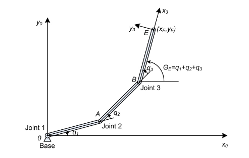

Robotic Arm Inverse Kinematics using Feedforward Neural Network
The method used to determine the position and orientation of the end-effector of a robotic arm, given the joint angles and lengths of the arm's links is known as forward kinematics. This is useful for many applications in robotics such as path planning, control and simulation.
Calculating the required joint angles for a desired end-effector position and orientation is the opposite problem and is known as the inverse kinematics. For simple robotic arms, the inverse kinematics can be determined in closed form using geometric relationships. As the complexity of the robotic arm grows, so does it's inverse kinematics and thus the math and computation required.
This type of problem naturally lends itself to an application of neural networks. In this project, a feedforward neural network is trained on a dataset of joint angles and end-effector positions to assess the network's ability to learn the inverse kinematics mapping.
Robotic Arm Workspace
For this project, a three-link planar manipulator was chosen as the forward kinematics are quite simple. Because the manipulator is planar, the end-effector position can be described by two equations representing it's location Cartesian space. An example of a simple three-link planar manipulator is shown below.
After defining the length of each link, it is easy to show that the forward kinematics is given by $$ x_E = l_1 \cos(q_1) + l_2\cos(q_1 + q_2) + l_3\cos(q_1 +q_2 + q_3) \tag{1}\label{xE}$$ $$ y_E = l_1 \sin(q_1) + l_2\sin(q_1 + q_2) + l_3\sin(q_1 +q_2 + q_3)\tag{2}\label{yE}$$ With the two equations above, the robotic arm workspace can be plotted in MATLAB. The workspace of a robotic arm represents the set of all points in space which the arm is physically able to reach.This can be constrained by a number of factors including the dimensions of the arm, the lengths of the links, the ranges of each joint and so on. The figure below shows the workspace for a three-link planar manipulator. Each dot represents a location in the workspace that the end-effector can reach. Notice, there is a half-circular section on the left side that does not have any dots. Based on the lengths of the links and the maximum joint angles, three may be regions that the manipulator cannot reach.
Training Data and Neural Network Architecture
With the workspace known, training data for the neural network can be developed. The input to the neural network is the desired end-effector position and orientation $$x_E, y_E, \theta_E$$ and the output is the required joint angles $$ q_1, q_2, q_3 $$ The training data consisted of 9,261 randomly generated points within the workspace. A diagram of the feedforward neural network is shown in the figure below.

For the hidden neurons, the activation function is non-linear being either the tanh or sigmoid function shown below. For the output, the activation function used is linear where the input directly equals the output. The activation functions tested are shown in Equations \ref{sig} and \ref{tanh}.
$$ \sigma(x) = \frac{1}{1+e^{-x}}\tag{3}\label{sig}$$ $$\tanh(x) = \frac{e^{2x}-1}{e^{2x}+1}\tag{4}\label{tanh}$$ The neural network is compiled using the Keras API in the Tensorflow library. It uses Stochastic Gradient Descent and a mean squared error loss function. The weights are initialized using the He method with a uniform distribution. The standard deviation for the He method is calculated as $$\sigma = \sqrt{\frac{2}{\# of inputs}}\tag{5}\label{sigma}$$ Then the limits of the uniform distribution are given by $$ a = \pm \sqrt{3} \cdot \sigma\tag {6}\label{sigmaEq} $$
Code
The neural network uses the Sequential() class in the Keras API. The code below shows how the feedforward neural network is defined by using Keras functions for adding dense hidden layers and output layer. When the model is compiled, arguments are passed to setup the loss function, optimizer, learning rate and whatever metrics one is interested in visualizing during and after training.
# create the model using sequential Dense layers
# Sequential model is feedforward neural network
model = Sequential()
# weight initialization method
initializer = HeUniform()
# add hidden layers and output layer
model.add(Dense(100, activation = 'tanh', input_shape = (3,), kernel_initializer = initializer))
model.add(Dense(3, activation = 'linear'))
# build model with loss function, optimizer and SGD
model.compile(loss = 'mean_squared_error', optimizer = SGD(learning_rate = 0.0002), metrics = ['accuracy'])
# prints model summary to show model details
model.summary()
The output from the model.summary() function is shown in the figure below. It gives a description of the neural network architecture. It also shows the total number of trainable parameters of the model. These include the weights of each neuron and the bias neurons. This model is quite small relative to other famous neural networks but, as shown further down, it performs quite well.
The model is trained for 4000 epochs with a batch size of 128. The dataset is split into a 75/25 split for training and validation dataset. The python code use for training the model is shown below.
# 75/25 train/validation data split
# split training data set
trainX, testX, trainY, testY = train_test_split(x, y, test_size = 0.25, random_state = 1)
maxEpochs = 4000
batchSize = 128
H = model.fit(trainX, trainY, validation_data = (testX, testY), epochs = maxEpochs, batch_size = batchSize)
Results
After training, the neural network was able to successfully learn the inverse kinematics representation for the three-link planar manipulator shown above. To visualize the performance of the neural network in determining the required joint angles for a desired end-effector position and orientation, the results are plotted in MATLAB.
The figure below shows the manipulator configuration(blue) determined by the forward kinematics next to the configuration for the joint angles determined by the neural network (orange). There is a little bit of error in the final position of the end-effector but given the size of the network and the relatively small amount of training data, the performance is quite good.
Future Work
This work focused on a planar three-link manipulator which has a closed form inverse kinematics solution as outlined in Springer's Handbook of Robotics. However, not all robotic arms have a simple, closed form solution for their inverse kinematics. The primary principle of this project, training a neural network to learn the inverse kinematics by using the forward kinematics to produce training data can be applied to any manipulator where the forward kinematics are known.
Fortunately, there is a standard convention which can be used to reporesent the forward kinematics of any robotic manipulator. This is known as the Denavit-Hartenberg Parameters. These parameters are a set of values which represent the geometric relationship between consecutive joints on a manipulator.
When I eventually have some free time, I plan to train a similar feedforward neural network to learn the inverse kinematics of a more complex manipulator. I would like to focus on a 6DOF manipulator like the UR5 by Universal Robotics shown in the figure below.
References
This project was based on the work done by Duka. The code and dataset that I used can be found on my GitHub